| 日付 | 2015年5月1日（金） |
|---|---|
| 山域 | 丹沢 |
| メンバー | 単独 |
| 山行形態 | 日帰り |
| アクセス | 車 |
| ルート (Map) | 丹沢湖畔駐車場 (10:33) - (10:48) 権現山登山口 - (12:15) 権現山 (12:24) - (12:54) ミツバ岳 - (13:27) ミツバ岳登山口 - (13:34) 丹沢湖畔駐車場 |
今年のGWは8連休で、昨日と今日は平日休みだ。
昨日に家の用事を終えて、本日は晴予報。子供を保育園に送った後、山に行くことにする。
明日から旅行の予定であり、何かと家の用事もあるため、近場の軽い山を選択。
丹沢の権現山～ミツバ岳に行くことにする。
バリエーションコースだが、難易度は高くなさそうだ。
丹沢湖畔の駐車場に車を停める。標高330m。
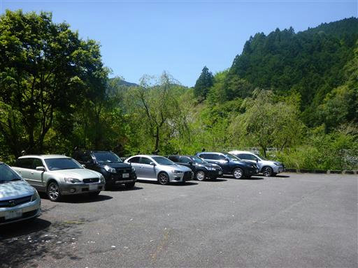
車道を歩いて権現山の登山口を目指す。辺りは美しい新緑に包まれている。
車通りは多くなく、車道を歩いているだけでも気持ちが良い。
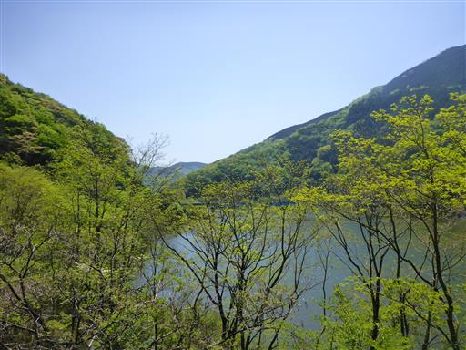
右手には丹沢湖が広がっている。三保ダムのダム湖だ。
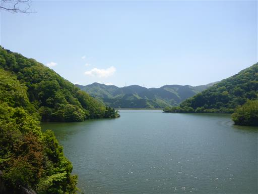
長いトンネルを抜ける。車やバイクが通ると音がかなりうるさい。
トンネルの車道歩きは不快だ。
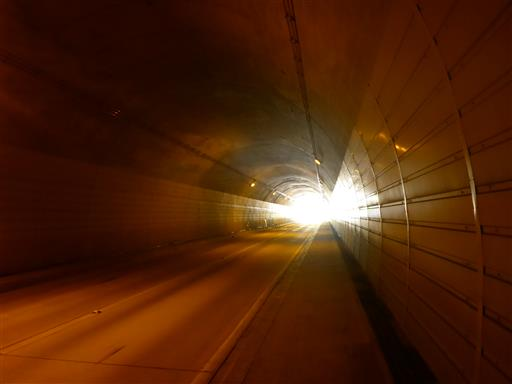
15分ほど歩いて登山道入口に到着する。
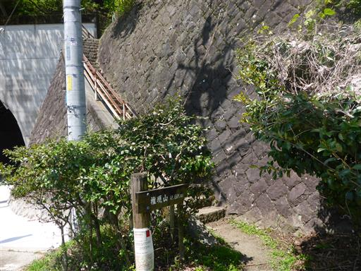
登山口には踏跡不明瞭との注意書きがある。
昭文社の地図では破線ルートになっている。
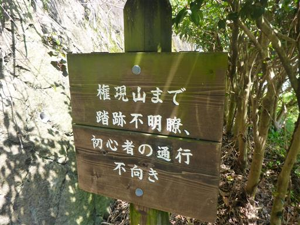
登山口から、いきなりの急登が始まる。
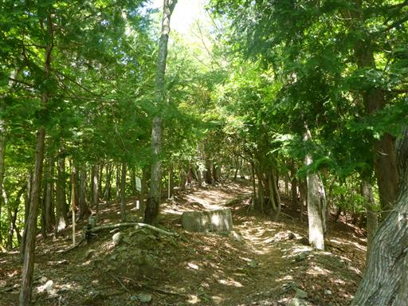
途中から植林地帯になる。有刺鉄線の柵とゲートがあるが、ゲートは壊れている。
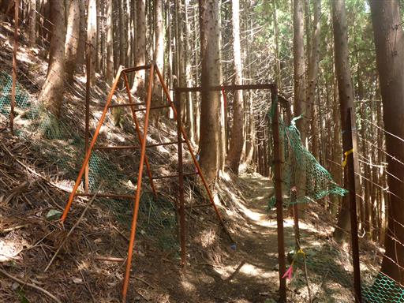
アブラチャン。西丹沢ではよく見かける木だ。
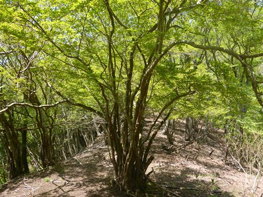
新緑に染まる権現山の山頂部が樹間から見えている。
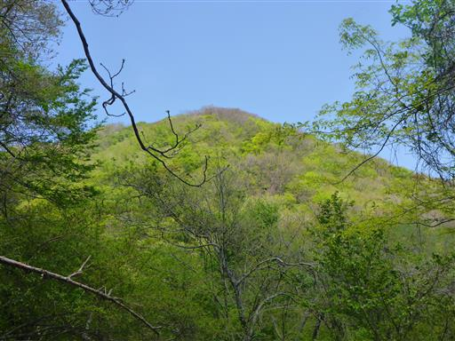
急斜面の砂道が続き、かなり登りにくい。
踏跡は比較的はっきりしているが、難易度は高い登山道だ。
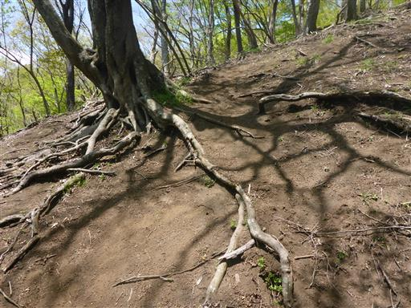
足元にキランソウの花が咲いている。
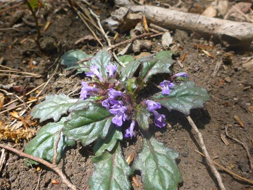
立派なブナの木。新緑が美しい。
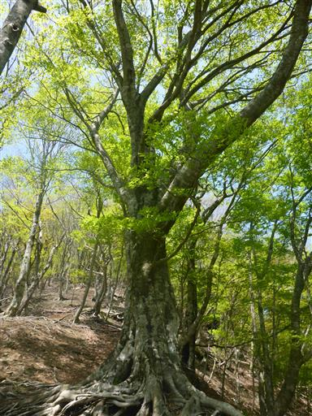
山頂に近くなると傾斜が緩み、明るい登山道になる。
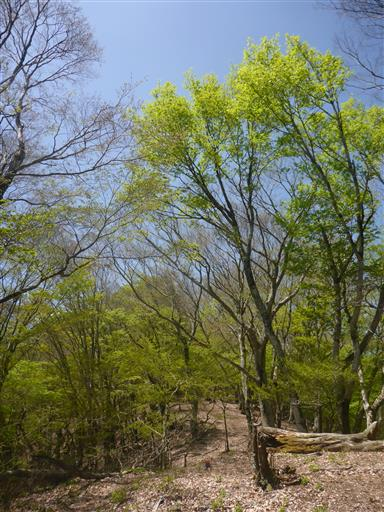
権現山の山頂に到着する。標高1019m。
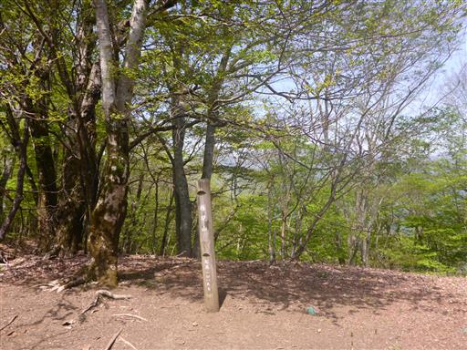
山頂は明るく開けているが、展望は全く無い。
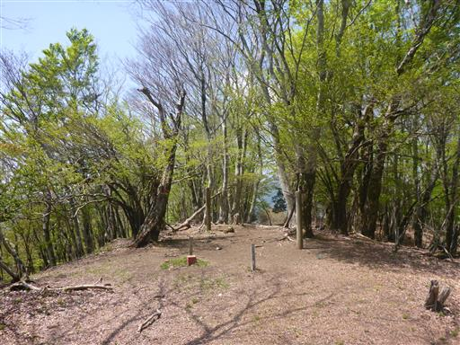
少し下ったところにテーブルがある。山頂は誰もおらず静かだ。
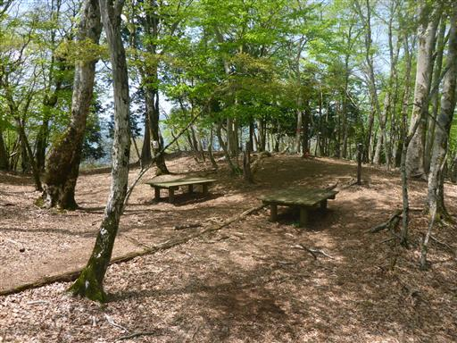
比較的ゆっくりと登ったため、少し時間が押している。
パンを1つ食べたら、残りは歩きながら食べることにする。
ミツバ岳に向かう尾根に祠が置かれている。昔から歩かれた道なのだろうか？
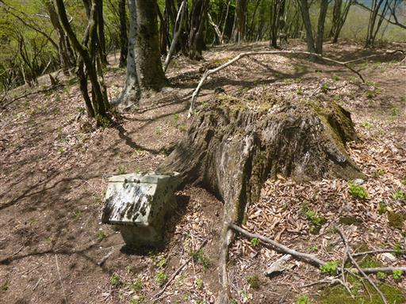
踏跡ははっきりしている。
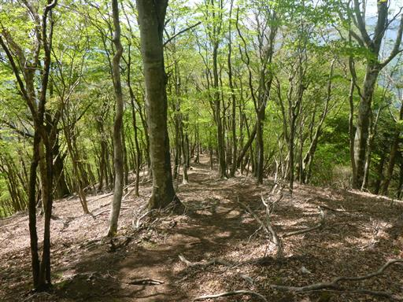
道は途中で大きな尾根から左に外れる。
本山行で一番難しい分岐点で、大きな木には矢印が書かれている。
登山道はこの表記の少し手前で左に逸れている。
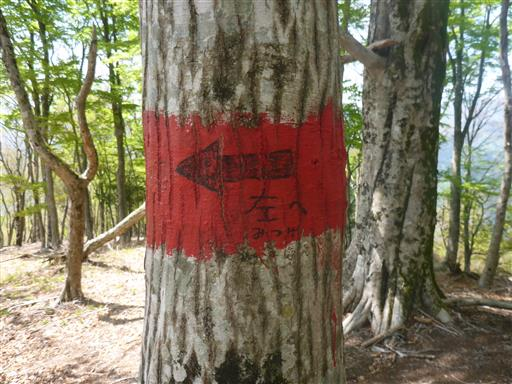
急斜面を下ると、尾根らしくなってくる。
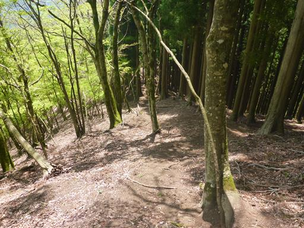
しばらく歩くとミツバ岳に到着する。標高836m。
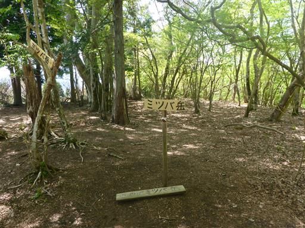
本日唯一の展望が開ける。
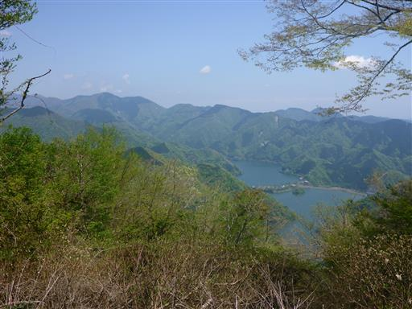
この山の山頂部はミツマタが群生している。
少し時期が遅くて、残念ながら花はもう咲いていない。
もっとも大して好きな花でもないが…
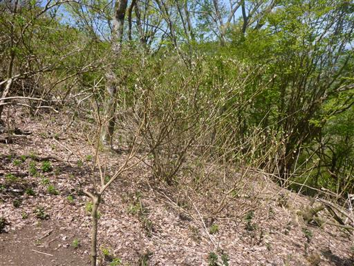
ミツバ岳からの下山道は、植林のジグザグ道が続きつまらない。
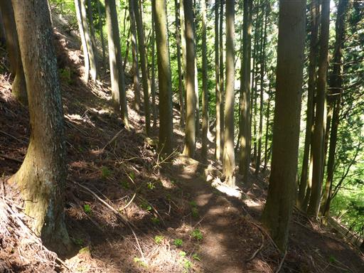
車道に下山する。登山口にもしっかり標識が立てられている。
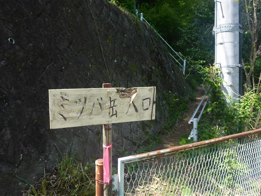
下山地点にある滝壺橋を渡る。名前の通り橋からは滝が見える。
ここから駐車場まではすぐだ。今日は誰にも出会わない静かな山行だった。
特に特徴のないコースだったが、この時期は新緑の季節のため、美しい景色を眺められた。
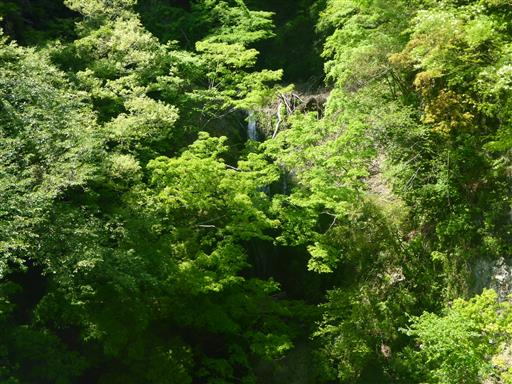